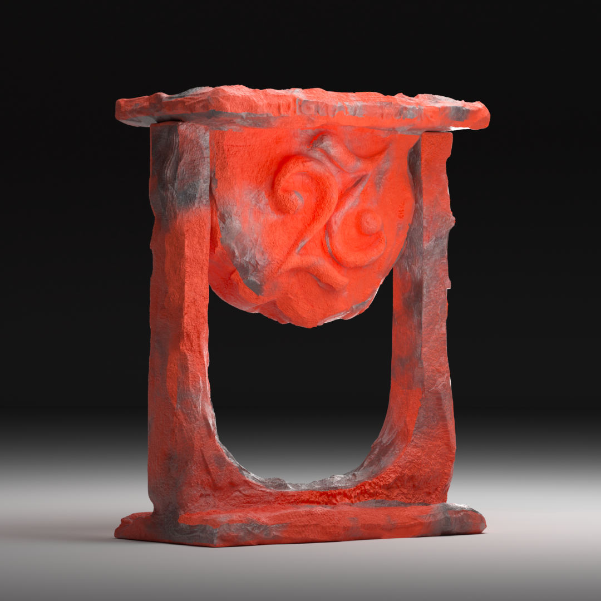
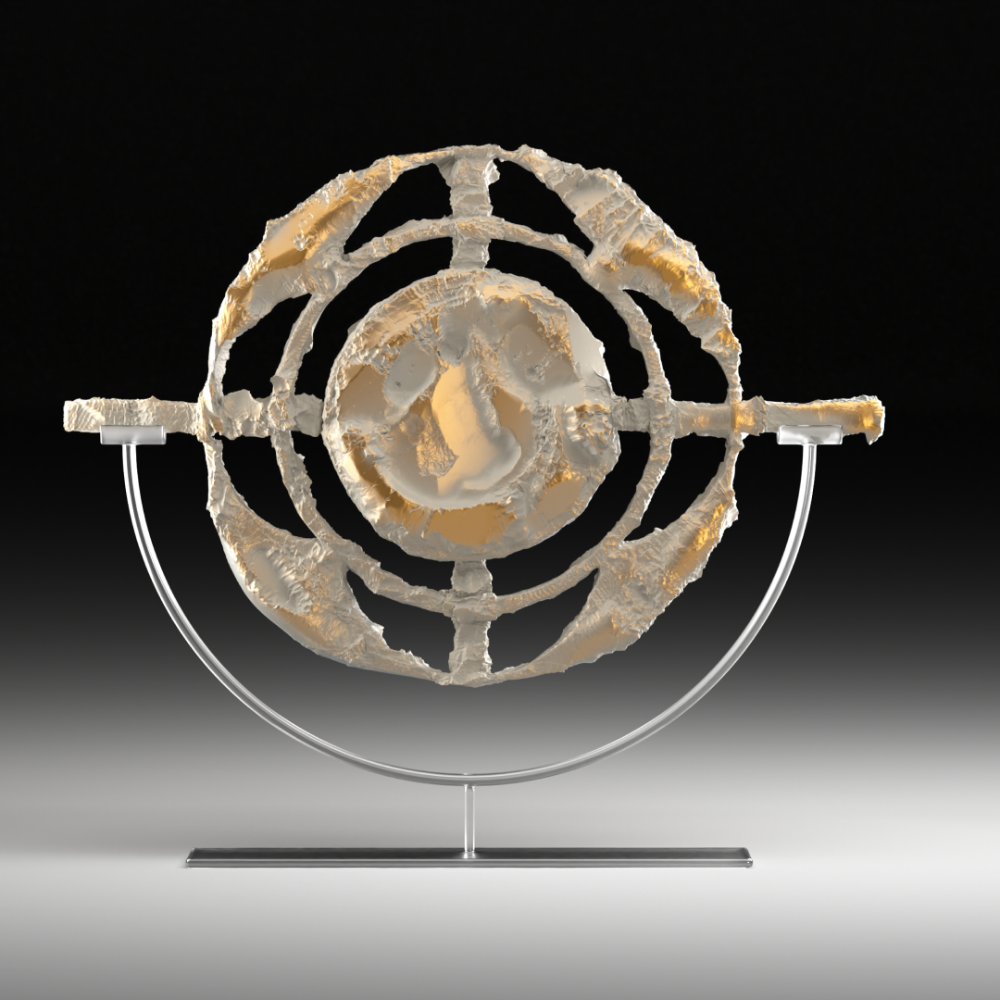
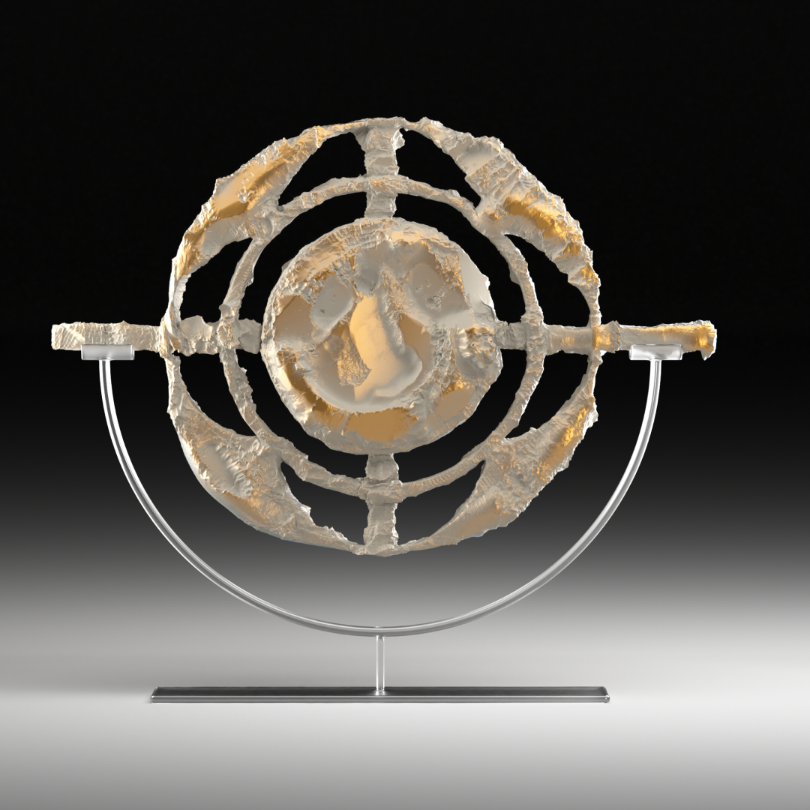
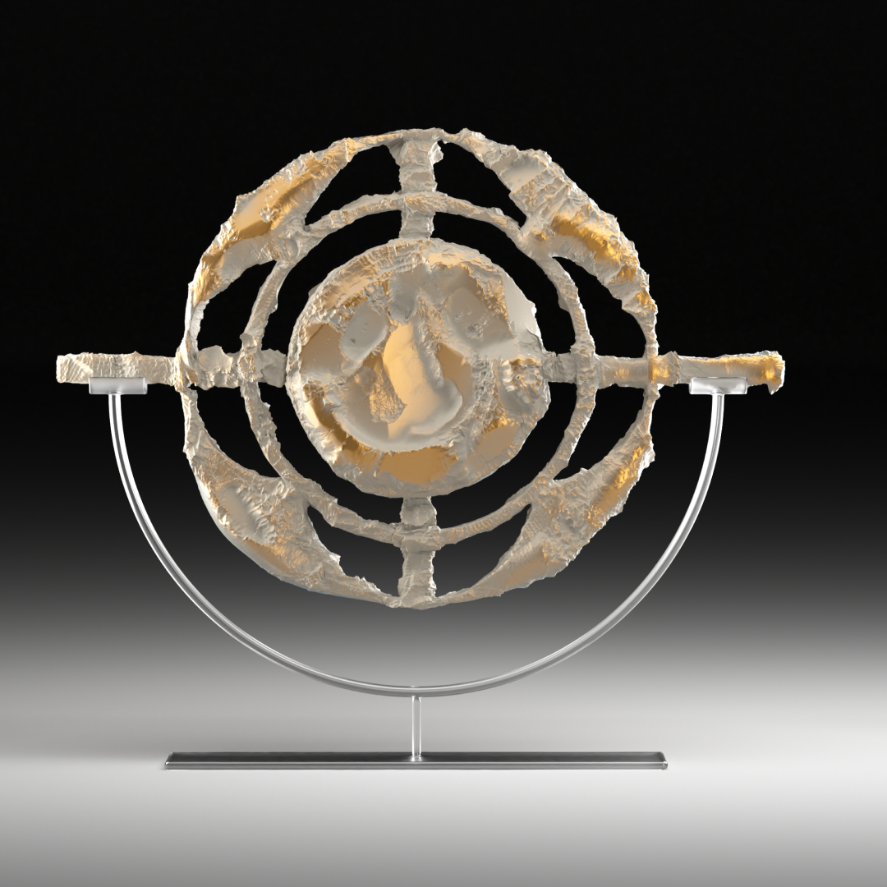

Datum: 08052020
The TP 1 design was discontinued in 1962. Use of plastics in audio housings returned briefly in the early 1970s when (unsuccessful) attempts were made to address the youth market. Rams' distinctive combination of grey plastic housings with unworked leather strap handles has been revived today in the wireless speaker designs of various manufacturers, see for example the B & O Beolit 17 and Beoplay A2.

 

